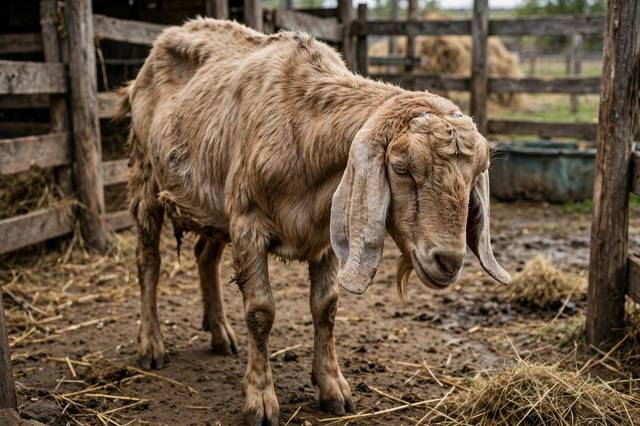
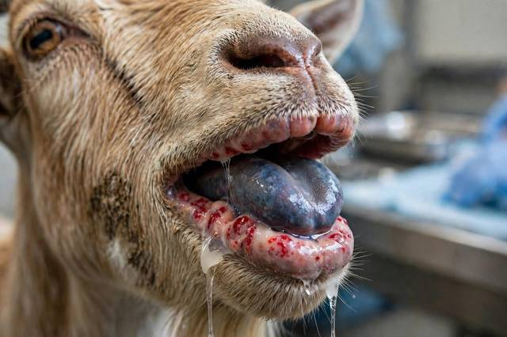
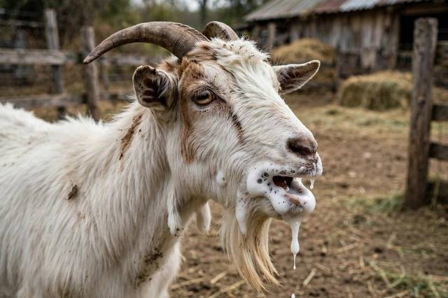
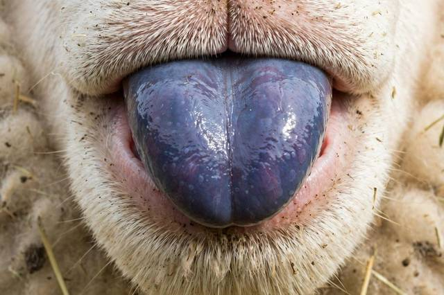
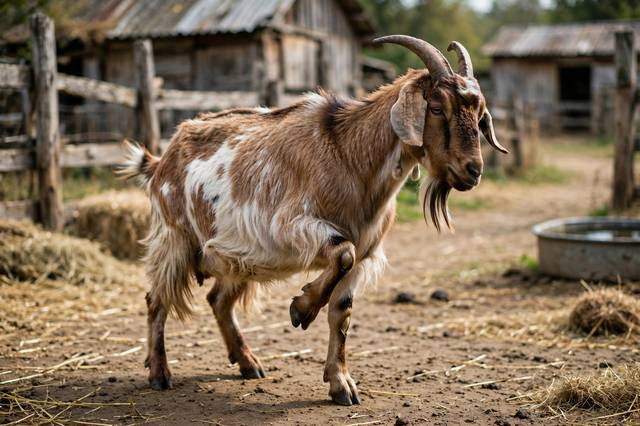
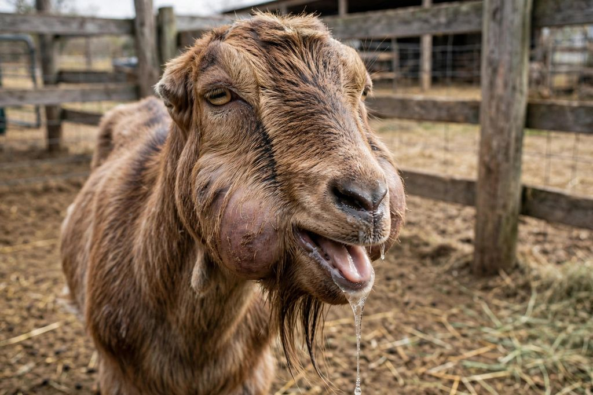

Bluetongue is a viral disease spread by biting midges. It affects sheep most severely, but goats can also be infected. Signs include fever, a swollen face, drooling and lameness.
In Pakistan, bluetongue (نیلی زبان) virus circulates widely, and outbreaks occur in sheep and goat flocks, especially in warm months when midges are active. Worldwide, bluetongue affects Africa, Asia, the Americas, Australia and parts of Europe, and it is a WOAH-listed disease. It does not infect people.
On this page: the cause, animals affected, clinical signs, diagnosis, treatment principles and prevention.
Cause
Bluetongue is caused by bluetongue virus, an orbivirus transmitted by biting midges of the genus Culicoides. The midges are most active at dawn and dusk and in warm, humid weather. The disease is not spread by direct contact between animals.
Pathogenesis
After an infected Culicoides midge bites, bluetongue virus replicates first in the regional lymph nodes and then spreads through the blood (viraemia) to many organs. The virus damages the lining of small blood vessels, causing fluid leakage, swelling and small haemorrhages. This vascular injury explains the swollen face, lips and tongue, the oedema of the head, and the painful, inflamed coronary band above the hoof.
The tongue may become swollen and blue from congestion and lack of oxygen in the tissues, though this sign is seen in only some animals. Ulcers form where the lining of the mouth and digestive tract is damaged. Goats often show milder disease than sheep, and many infected goats show few or no signs, but they can still carry the virus in the blood for a period after infection.
Animals Affected
Sheep are the most severely affected species. Goats are usually less severely affected but can show signs. Cattle are commonly infected but rarely show disease, and they act as a reservoir for the virus.
Clinical Signs
1
Fever(High body temperature)
2
Loss of appetite(Refusing to eat)
3
Swelling of the face, lips and muzzle(Swollen face and muzzle)
4
Redness and sores inside the mouth(Sore, inflamed mouth)
5
Drooling(Excessive drooling)
6
The tongue may swell and turn blue(Swollen blue tongue, less common in goats)
7
Lameness from inflammation around the hooves(Sore feet, reluctant to walk)
8
Nasal discharge(Runny nose)
9
Reduced milk(Drop in milk production)
10
Severe cases may be fatal, especially in sheep(Can be fatal in severe cases)

FeverLoss of appetite

Swollen face and muzzleMouth sores

Drooling

Blue tongue

LamenessNasal dischargeReduced milk

Severe cases may be fatal
Diagnosis
Clinical signs and the season of midge activity raise suspicion. Laboratory confirmation is by blood tests (ELISA) or PCR. Bluetongue must be distinguished from foot-and-mouth disease, PPR, orf and goat pox.
Differential Diagnosis
Several diseases cause mouth sores, fever and lameness in goats, so laboratory confirmation matters:
Foot-and-mouth disease — blisters in the mouth and on the feet, but no swelling of the head or blue tongue.
PPR — eye and nasal discharge, mouth erosions and severe diarrhoea; no oedema of the face or coronitis.
Orf — crusty sores limited to the mouth and face, without fever, oedema or lameness.
Goat pox — hard nodules spread over the skin, not swelling of the head and tongue.
Treatment
There is no specific antiviral treatment. Care is supportive: shade, soft feed, clean water and nursing. Secondary complications are treated under veterinary direction.
Recommended Medicines
1
NSAID – Meloxicam(For fever, pain and inflammation)0.5–1 mg/kg IV/SC once (goats)
2
Fluid therapy – Oral electrolytes / IV fluids(To support hydration)As prescribed by a veterinarian
3
Antibiotic – Oxytetracycline(Only for diagnosed secondary bacterial complications)10 mg/kg IM daily (conventional) — or LA preparation: 20 mg/kg IM/SC once, repeat after 3–4 days if needed (goats)
⚠ Important Tips:
There is no antiviral cure — shade, soft feed, clean water and nursing are the treatment.
Use antibiotics only under veterinary advice, and only for secondary complications.
House animals indoors at dawn and dusk when midges are most active.
Vaccinate where a vaccine matched to the circulating serotypes is available.
Vaccination — follow the vet’s scheduleInjection — vet-administered only
Prevention
Vaccinate where a vaccine matched to the circulating serotypes is available
House animals indoors at dawn and dusk when midges are most active
Use insect control measures advised by a veterinarian
Avoid moving animals from areas with active outbreaks
Report suspected cases to the veterinary authority
Key Takeaway
Bluetongue follows the midges. Vaccination and midge control during the warm months are the keys to prevention.
Keep herd health records, consult a qualified veterinarian and follow the animal-health authority's current guidance for your region.
References
Standard veterinary references consulted for this guide:
MSD Veterinary Manual
Radostits et al., Veterinary Medicine: A Textbook of the Diseases of Cattle, Horses, Sheep, Pigs and Goats
WOAH Manual of Diagnostic Tests and Vaccines for Terrestrial Animals
FAO animal health manuals
Frequently Asked Questions
What are the symptoms of bluetongue in goats?
Fever and loss of appetite, swelling of the face, lips and muzzle, redness and sores inside the mouth with drooling, and lameness from inflammation around the hooves. The tongue may swell and turn blue, though this is less common in goats.
What causes bluetongue in goats?
Bluetongue is caused by bluetongue virus, transmitted by biting midges of the genus Culicoides. The midges are most active at dawn and dusk and in warm, humid weather. The disease is not spread by direct contact between animals.
Can bluetongue spread to people?
No. Bluetongue does not infect people.
How is bluetongue in goats treated?
There is no specific antiviral treatment. Care is supportive: shade, soft feed, clean water and nursing. Secondary complications are treated under veterinary direction.
How can bluetongue in goats be prevented?
Vaccinate where a vaccine matched to the circulating serotypes is available. House animals indoors at dawn and dusk when midges are most active, use insect control measures advised by a veterinarian, and avoid moving animals from areas with active outbreaks.
Why is my goat tongue blue?
The tongue may swell and turn blue in bluetongue, though this is less common in goats. Fever, a swollen face, mouth sores, drooling and lameness are more typical signs, so a veterinarian should assess the animal.
How to prevent bluetongue in goats?
Vaccinate where a vaccine matched to the circulating serotypes is available. House animals indoors at dawn and dusk when midges are most active, and use insect control measures advised by a veterinarian.
بکری کی زبان نیلی کیوں ہو جاتی ہے؟
نیلی زبان کی بیماری میں بخار، چہرے کی سوجن، منہ کے چھالے، رال بہنا اور لنگڑاپن ہوتا ہے۔ زبان کا نیلا پڑنا بکریوں میں کم عام ہے۔ یہ بیماری کاٹنے والی مکھیوں سے پھیلتی ہے، ویکسین اور کیڑوں پر قابو بچاؤ ہے۔
✍️ Written by Dr. Shahid Bilal Depal, DVM (PVMC RVMP #15068)
This guide is for educational purposes. Consult a registered veterinarian for diagnosis and treatment.